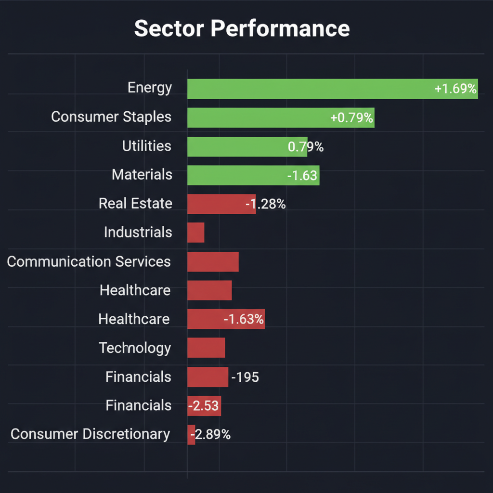
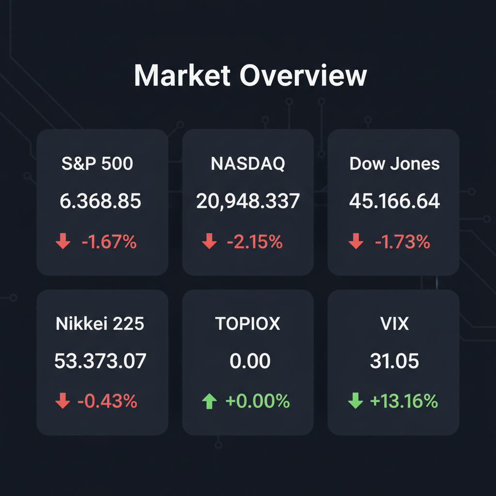

Daily Investment Report - 2026-03-29
Generated: 2026/3/29 8:14:24


投資チームミーティングでの各エージェントの詳細な分析とディスカッションを踏まえ、現在の緊迫した市場環境における最終投資レポートを以下の通りまとめました。
1. エグゼクティブサマリー
- 中東の地政学リスク激化とインフレ再燃懸念により、VIX指数が31を突破する深刻なリスクオフ相場（スタグフレーション警戒局面）に突入しています。
- ハイテク株や一般消費財が激しく売り込まれる一方、資金はエネルギー、防衛関連、そして現金（ディフェンシブ資産）へと猛烈な勢いで逃避しています。
- 当面は安易な押し目買いを控え、キャッシュ比率の大幅な引き上げとテイルリスク・ヘッジによる「ポートフォリオの生存（資産防衛）」を最優先すべき局面です。
2. 注目銘柄リスト
ボラティリティが高い局面では、強固なバランスシートを持ち、マクロ経済に左右されにくいカタリスト（好決算、国策の恩恵）を持つ中小型株への選別投資が有効です。
強気（買い推奨）
- 宝＆ＣＯ（7921.T） [時価総額 約300億円台]: 法規制に裏打ちされたディスクロージャー支援事業は景気耐性が極めて高く、安定したフリーキャッシュフローと低PER・高配当により、暴落相場でも下値リスクが限定的な良質なバリュー株です。
- サツドラＨＤ（3544.T） [時価総額 約100億円台]: 直近の決算発表で明確なポジティブ・サプライズをもたらしており、生活必需品セクターとしてのディフェンシブな特性が現在の相場環境に合致しています。
- Nexstar Media Group（NXST） [時価総額 約$5B強]: Tegna買収に関する訴訟ノイズで短期的な売り圧力があるものの、強力なキャッシュ創出力と恒常的な1桁台の低PERを誇り、中長期の安全マージンが厚い絶好の買い場です。
中立（様子見）
- ＷＳＣＯＰＥ（6619.T） [時価総額 約1000億円未満]: 決算への市場反応は良好で脱中東の「エネルギー転換テーマ」に合致しますが、継続的な巨額の設備投資によるフリーキャッシュフローの赤字化リスクがあるため、テクニカルな底打ちを確認するまで様子見を推奨します。
弱気（警戒）
- Paramount Global（PARA） [時価総額 約$8B]: アニメーション部門での競争力低下（過去10年で8作品のみ）に加え、巨額の負債を抱えており、現在の高金利・コスト増環境下では典型的なバリュートラップとなる危険性があります。
- コーセル（6905.T） [時価総額 約400億円台]: 直近の決算発表でマイナス・インパクト（業績発表を受けて売り先行）を出しており、相場全体の下落トレンドと相まって、サポートラインを割り込む強い売り圧力に晒される懸念があります。
3. セクター推奨ランキング
1.
エネルギー・石油化学セクター: ホルムズ海峡の封鎖懸念や中東アルミ供給網の被災を背景に、強い価格決定力を持ち、インフレおよび地政学リスクの直接的なヘッジとして機能するため。
2.
防衛・造船・極地インフラセクター: 米国の北極圏砕氷船ミッション（数十億ドル規模）など、景気動向や金利に左右されない強力な国策マネーの流入が確定しているため。
3.
ディフェンシブ（公益事業・生活必需品）: VIXが30を超えるパニック相場において、業績のボラティリティが低く、安全な資金の逃避先となるため。
4.
エンターテインメント・メディアセクター: 競争力の格差が激しく、アニメーション制作で先行する一部企業を除き、コスト増と消費者需要減退の板挟みになりやすいため（アンダーウェイト推奨）。
5.
一般消費財・航空・旅行セクター: 高額な航空運賃に対する抵抗感や消費者信用の悪化により需要破壊が起きており、スタグフレーション下で最も致命的な打撃を受けるため（最下位・投資完全回避）。
4. 今週の注目イベント
- 3月30日〜4月3日: 日経平均の配当落ち後の値動き、およびシカゴ先物（1,495円安）を受けた週明けの窓開け急落への市場の反応。
- 3月下旬〜4月上旬: 米国3月雇用統計の発表（インフレ再燃の確認と、FRBの「利上げ転換リスク」を見極める最重要指標）。
- 随時: イランのブーシェフル原子力発電所の状況報告および、ホルムズ海峡封鎖に関する地政学ヘッドライン。
- 随時: 日本政府・日銀による円買い為替介入の動向（日経平均高値圏での急激な円高反転リスク）。
5. リスク要因
- 第3次オイルショック・サプライチェーン麻痺: 中東情勢のエスカレーション（ホルムズ海峡の物理的封鎖や原発の状況悪化）による、原油・プラスチック・アルミニウム価格の暴騰。
- 中央銀行のタカ派シフト（救済の消滅）: インフレ再燃により、FRBおよびECBが「利下げ見送り」どころか「利上げ再開」に追い込まれ、ハイテク・グロース株のバリュエーションが崩壊するリスク。
- 重篤な信用収縮（クレジットクランチ）: 航空運賃の高騰や個人の信用スコア悪化に象徴される消費者の購買力限界と、それに伴う貸倒れの連鎖による金融セクターのバランスシート毀損。
- テクニカルな底割れと流動性枯渇: VIX31超えのパニック下で、NASDAQの52週移動平均線割れが引き起こすアルゴリズムの連鎖的な投げ売り。
- 円キャリートレードの暴力的な巻き戻し: 欧米の利上げ観測と日銀の為替介入警戒が交錯し、突発的な円高が進行して日本株（特に輸出企業）がフラッシュ・クラッシュを起こすリスク。
6. アクションアイテム
- キャッシュ比率の大幅な引き上げ: 安易な押し目買い（特にハイテク株・消費財・落ちるナイフ状態の中小型株）やナンピンを即座に中止し、ポートフォリオの30〜50%を現金や短期国債（MMF）に退避させてください。
- 厳格なストップロスの設定: 既存の保有銘柄に対して、直近サポートライン（前日安値など）のすぐ下にタイトな逆指値注文を設定し、損失の拡大を機械的に遮断してください。
- テイルリスク・ヘッジの実行: ポートフォリオの2〜3%の小規模な資金を用いて、VIXのコールオプションや主要指数（S&P500、NASDAQ）のプットオプションを購入し、最悪の暴落シナリオに対する「保険」をかけてください。
- 新規買いの厳選: 資金を投入する場合は、防衛・造船関連のニッチトップ企業や、強固な財務と価格転嫁力を持つ宝＆ＣＯのような実質無借金の中小型バリュー株に限定してください。
- 集中リスクの排除: エネルギーや防衛テーマへの過度な集中を避け、突発的な「停戦交渉進展」の報道によって起こり得る急激なショートスクイーズ（踏み上げ）や急落リスクにも耐えられるよう、資金管理を徹底してください。